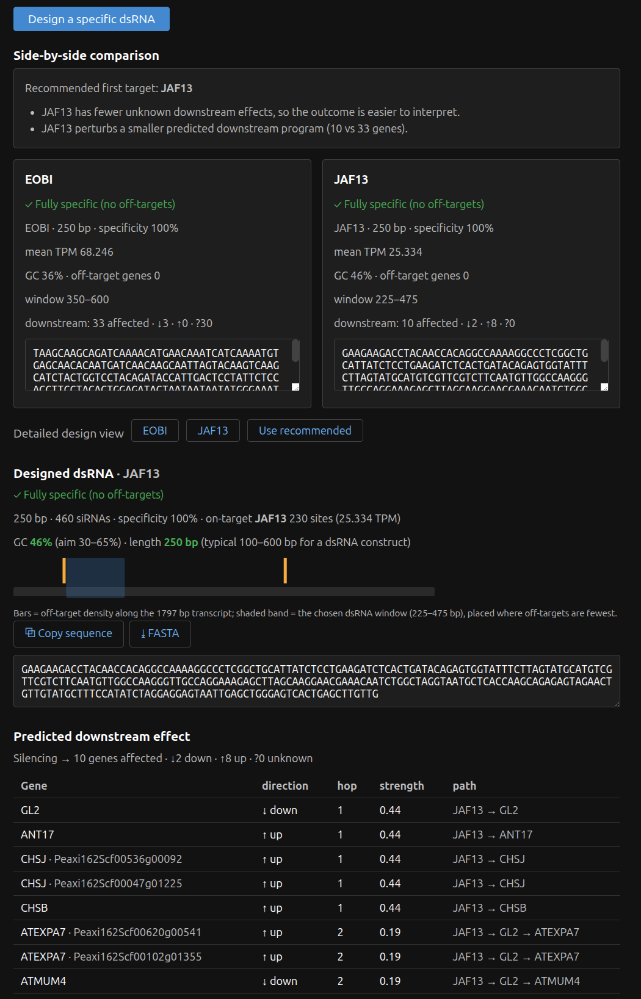
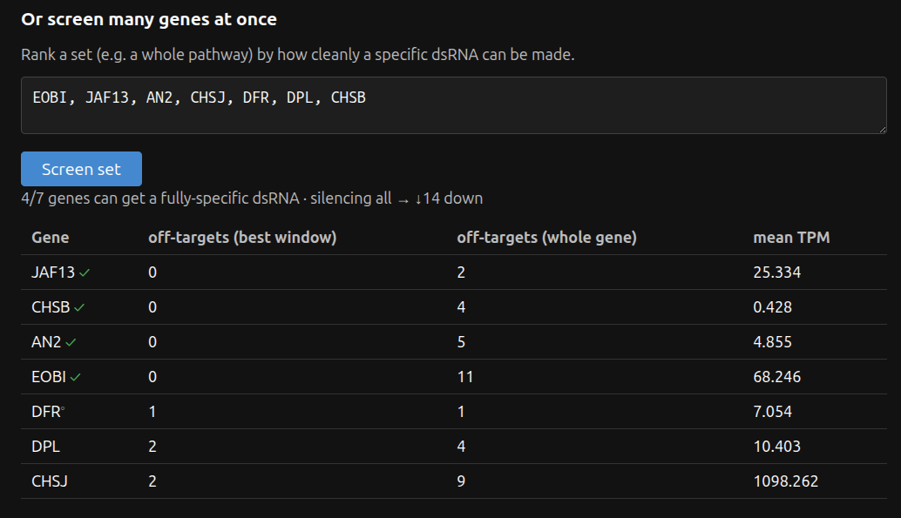
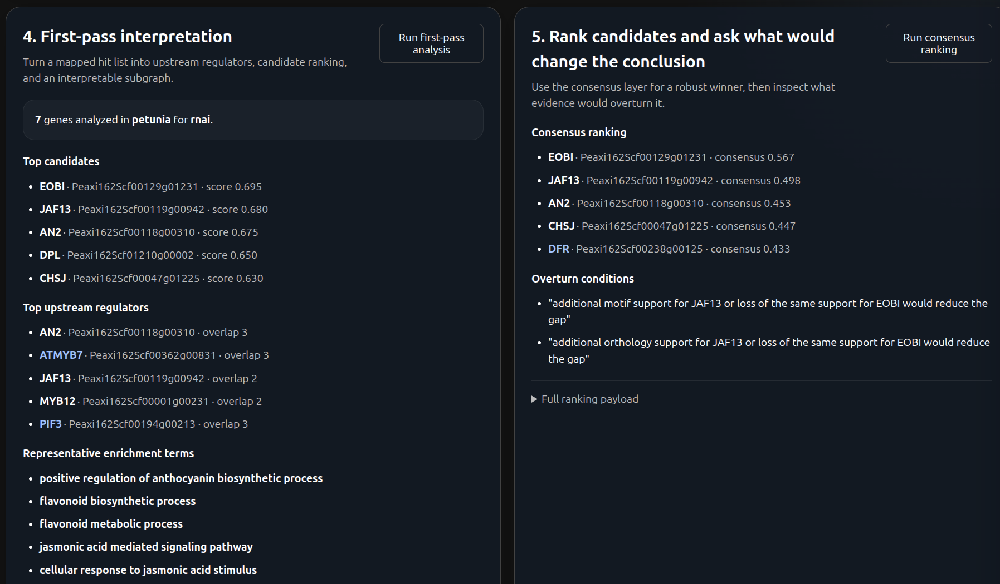
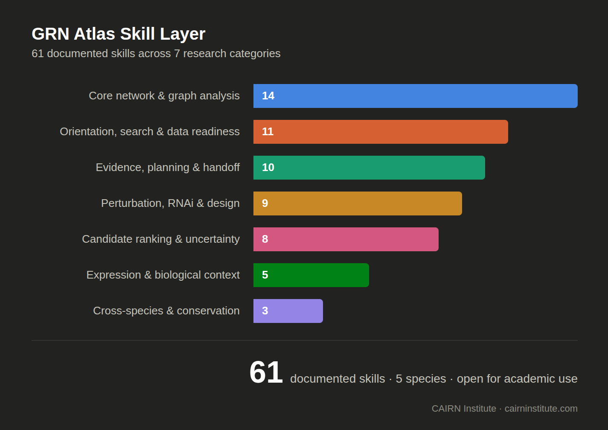
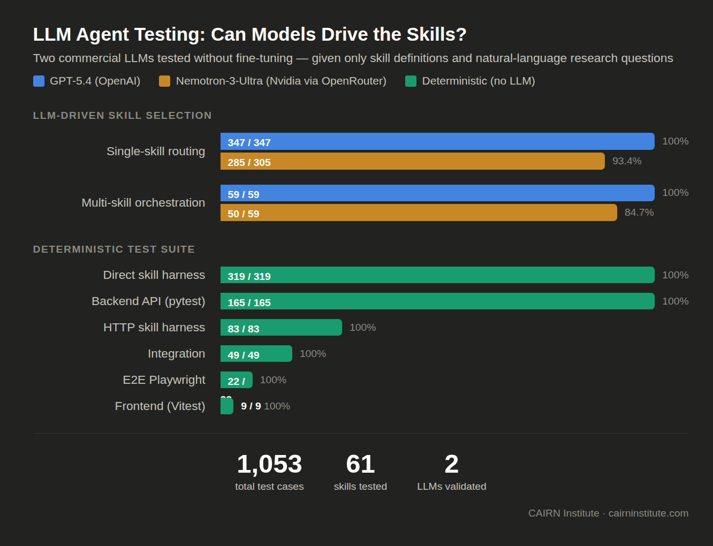

Public Release Update: GRN Atlas Skill Layer, Research Workflows, and LLM Validation
Explore the repository on GitHub →Quick Summary
Today we are publishing a release update for GRN Atlas focused on the skill layer, the research workflows it enables, and the validation work completed across both the application stack and external LLM orchestrators.
GRN Atlas is a multi-species gene regulatory network platform for exploring regulatory edges, promoter and motif context, expression, pathways, traits, orthology, perturbation effects, RNAi-oriented dsRNA design, CRISPR-oriented heuristics, chromatin-linked support, and packaged research workflows across human, mouse, Arabidopsis, tomato, petunia, pepper, and potato. It includes both an interactive web UI and a structured skill layer for agent-driven workflows.
As of Saturday, August 22, 2026, the repository contains 100 documented GRN Atlas skills:
- 99 callable analysis and workflow skills
- 1 overview/router skill
The current clean repository LLM results are:
- GPT-5.4 single-skill matrix: 383/386 pass, with 7 retry-recovered flaky passes
- GPT-5.4 orchestration matrix: 111/111 pass, with 4 retry-recovered flaky passes
- Nemotron-3-Ultra single-skill matrix: 255/258 pass before provider/model exit
- Nemotron-3-Ultra orchestration matrix: 37/40 pass before provider/model exit
- Nemotron targeted single-skill diagnostic subset: 36/38 pass
GRN Atlas is being released free for academic and non-commercial use. For commercial use, productization, deployment, or partnership discussions, contact CAIRN Institute.
Why We Built It
Researchers do not usually ask one-step questions.
A real workflow looks more like this:
- identify the regulators of a gene
- compare those regulators across species
- inspect whether motif evidence supports the edge
- ask whether the same story appears in expression
- test what happens if the regulator is perturbed
- design an intervention strategy such as dsRNA
- decide whether the evidence is strong enough to justify an experiment
- hand the result to a collaborator in a readable form
Most biological software handles only one piece of that chain. GRN Atlas was built to close that gap and give researchers a single place to move from question to hypothesis to next action.
What GRN Atlas Is
GRN Atlas is an integrated research workspace for gene regulatory network analysis. It combines:
- curated regulatory interactions
- inferred regulatory edges
- promoter and motif context
- plant expression panels
- pathway and trait enrichment
- orthology and cross-species conservation
- signed perturbation analysis
- RNAi-oriented dsRNA design and screening
- evidence-audit and experiment-planning workflows
- collaborator-facing study packet and report generation
The atlas currently supports seven species: human, mouse, Arabidopsis, tomato, petunia, pepper, and potato.
Some layers are measured, some are projected, and some are computationally inferred or predicted. A core design rule is that these are never mixed without labeling.
What You Can Do With It
1. Explore a gene’s regulatory neighborhood

You can ask:
- who regulates this gene?
- what genes does this TF regulate?
- is there a path from gene A to gene B?
- what subgraph connects this candidate set?
- which regulators are shared across these genes?
2. Interpret a gene set biologically
You can ask:
- what GO terms are enriched?
- what pathways are overrepresented?
- what traits are associated with this set?
- which upstream TFs best explain the genes I care about?
- what evidence supports this candidate set strongly enough to act on?
3. Compare across species
You can ask:
- what is the ortholog of this gene?
- is this regulatory edge conserved?
- does a gene-level claim transfer from one species to another?
- what caveats should I keep in mind before extrapolating?
4. Predict interventions
You can ask:
- what happens if I knock out MYC?
- how does a cascade propagate if a regulator increases 1.5-fold?
- how does a double perturbation compare with a single perturbation?
- which downstream genes are predicted to change?
- what biological processes are enriched among affected targets?
5. Design and compare RNAi strategies


For plant workflows, you can ask:
- can a dsRNA be designed for this target?
- which of several candidate genes is the cleanest RNAi target?
- which target has the lowest off-target burden?
- what happens downstream if I silence the winner?
- how does dsRNA compare with promoter editing for this objective?
6. Turn analysis into decisions

You can ask:
- is there enough atlas coverage for this analysis?
- which candidates should I prioritize?
- what is the confidence boundary here?
- what is the smallest defensible next step?
- how do I turn this into a validation plan, study packet, or report?
The Web UI
GRN Atlas ships with a browser-based interface for interactive exploration and workflow-first analysis. The UI supports:
- gene search by symbol, alias, name, or ID
- network browsing
- subgraph extraction
- motif and promoter analysis
- expression and coexpression views
- centrality and module analysis
- inferred-edge and differential-regulation panels
- workflow-guided phenotype and hit-list analysis
- export and handoff workflows
This release includes a working frontend for direct use by researchers as well as an API-backed analysis layer for more structured workflows.
The Skill Layer
GRN Atlas also includes an AgentSkills-style skill library for structured tool use. The repository currently contains 100 documented skills:
- 99 callable analysis/workflow skills
- 1 overview/router skill

These skills are best understood by the high-level work they enable.
1. Orientation, search, provenance, and data readiness
These skills help a researcher identify the right genes, understand species support, clean inputs, and confirm what the atlas can defensibly answer before deeper analysis begins.
| Skill | What it does |
|---|---|
grn-atlas-overview | Overview and workflow router for the atlas |
grn-gene-search | Search genes by symbol, alias, keyword, or partial text |
grn-gene-info | Retrieve detailed metadata and TF status for a gene |
grn-species | Report per-species capability coverage |
grn-stats | Return atlas-wide and per-species summary statistics |
grn-provenance | Expose data sources, methods, and provenance metadata |
grn-citations | Export BibTeX citations for atlas sources |
grn-input-normalization | Clean and normalize pasted biological input |
grn-dataset-import | Parse and map gene lists or tabular inputs into atlas genes |
grn-coverage-report | State whether a species is ready for a given analysis intent |
grn-species-onboarding-plan | Outline the staged requirements for onboarding a new species |
2. Core regulatory network structure and graph analysis
These skills answer the structural questions that sit at the heart of regulatory network analysis.
| Skill | What it does |
|---|---|
grn-network | Explore upstream regulators and downstream targets |
grn-pathfinding | Find regulatory paths between genes |
grn-subgraph | Extract the induced subgraph for a gene set |
grn-shared-regulators | Identify regulators shared by two or more genes |
grn-regulon | Extract a TF regulon at configurable depth |
grn-regulon-compare | Compare two TF regulatory programs |
grn-upstream | Rank upstream regulators for a gene set |
grn-network-patterns | Detect feed-forward loops, autoregulation, and bi-fan patterns |
grn-centrality | Compute centrality measures for genes in a network |
grn-module | Detect regulatory modules or communities |
grn-motif | Query motif hits in gene promoters |
grn-infer | Surface expression-inferred regulatory edges |
grn-diff-regulation | Compare regulatory programs across tissues or conditions |
grn-export | Export network edges with genomic and motif context |
3. Expression, differential context, and support boundaries
These skills add biological context and also state clearly when deeper context layers are not yet available.
| Skill | What it does |
|---|---|
grn-expression | Retrieve gene expression profiles |
grn-coexpression | Find co-expressed partner genes |
grn-differential-expression | Compare tissues, conditions, or imported DEG results |
grn-celltype-regulation | Report readiness and boundary conditions for cell-type analysis |
grn-trajectory-regulation | Report readiness and boundary conditions for trajectory analysis |
4. Cross-species reasoning and conservation
These skills help researchers transfer hypotheses more carefully rather than assuming conservation without checking.
| Skill | What it does |
|---|---|
grn-orthology | Find orthologs and inspect their local network context |
grn-conservation | Compare edge or network conservation across species |
grn-transferability | Assess whether a gene-level conclusion is likely to transfer |
5. Perturbation, RNAi, promoter editing, and assay-oriented design
These skills move the platform beyond descriptive analysis and into intervention planning.
| Skill | What it does |
|---|---|
grn-perturbation | Predict downstream effects of silencing, knockout, or overexpression |
grn-cascade | Model cascade effects from upstream interventions |
grn-combinatorial-perturbation | Compare pairwise and triple perturbation strategies |
grn-dsrna | Design or analyze dsRNA for RNAi silencing |
grn-dsrna-screen | Screen multiple genes for dsRNA designability and off-target burden |
grn-variant-effect | Test whether promoter-region variants overlap motif-supported sites |
grn-promoter-edit-prioritization | Rank promoter sites as editing targets |
grn-crispr-design | Suggest lightweight CRISPR guides |
grn-primer-design | Suggest lightweight primer pairs |
6. Candidate ranking, uncertainty handling, and hypothesis comparison
These skills are designed for the part of research where a user needs to decide what to do next, not just inspect one more table.
| Skill | What it does |
|---|---|
grn-candidate-triage | Rank a candidate gene list for a stated objective |
grn-consensus-ranking | Combine evidence layers into one weighted ranking |
grn-counterfactual-analysis | Explain what evidence would overturn the current winner |
grn-confidence-boundary | State what is supported, unsupported, and ambiguous |
grn-decision-boundary | Produce a decision-ready support and uncertainty summary |
grn-hypothesis-compare | Compare competing candidate hypotheses |
grn-minimal-validation | Compress a larger plan into the smallest defensible next step |
grn-phenotype-targeting | Start from a phenotype or design goal and ground candidates |
7. Evidence synthesis, literature, planning, and collaborator handoff
These skills are the last mile between analysis and a usable research artifact.
| Skill | What it does |
|---|---|
grn-evidence-audit | Audit what evidence supports a gene or regulatory edge |
grn-evidence-synthesis | Convert evidence into a writing-ready synthesis |
grn-literature-review | Retrieve and classify recent external literature |
grn-user-gene-set-analysis | Run a first-pass interpretation over a user gene set |
grn-experiment-prioritization | Recommend next analyses or experiments |
grn-experiment-optimizer | Re-rank follow-up options under budget, time, and assay constraints |
grn-research-brief | Build a structured research brief |
grn-validation-plan | Build an execution-oriented validation plan |
grn-study-packet | Assemble a collaborator handoff packet |
grn-study-report | Produce a collaborator-facing narrative report |
Why the Skill Layer Matters
A useful research assistant is not just a model with access to endpoints. It needs a stable vocabulary of actions.
A question like:
Screen these RNAi candidates, pick the cleanest one, predict the perturbation effects, and summarize the affected biology.
is not one database call. It is a multi-step workflow.
In GRN Atlas, that workflow can be expressed as:
grn-dsrna-screengrn-perturbationgrn-enrichment
Other realistic examples include:
grn-user-gene-set-analysis→grn-shared-regulators→grn-consensus-rankinggrn-orthology→grn-conservation→grn-transferabilitygrn-candidate-triage→grn-experiment-prioritization→grn-research-briefgrn-research-brief→grn-validation-plan→grn-study-packet→grn-study-report
That structure matters for reproducibility, testing, debugging, and failure analysis.
What the Full Skill Layer Enables for Researchers
Taken together, the skill system enables a broader class of work than a fixed dashboard or a raw database API. Researchers can use it to:
- move from a phenotype question to a grounded candidate list
- map messy hit lists into species-specific atlas identifiers
- compare regulatory programs and shared regulators across candidates
- assess transferability before carrying conclusions across species
- design and compare RNAi interventions
- reason about perturbation cascades before running experiments
- document confidence boundaries rather than overstating support
- produce structured handoff material for collaborators, students, or downstream teams
This matters because typical biological questions are rarely isolated. They are chained, conditional, and decision-oriented.
Testing With External LLMs

To validate that the skill layer works not just in isolation but when driven by an external language model, we tested with two commercial LLMs — OpenAI’s GPT-5.4 and Nvidia’s Nemotron-3-Ultra (via OpenRouter) — neither fine-tuned on GRN Atlas. The models received only the skill definitions and natural-language research questions, and had to select the correct tools, extract the right parameters, and chain multi-step workflows on their own.
The repository now has two useful LLM validation stories:
- the current clean GPT-5.4 matrices, which reflect the latest repository status
- the Nemotron-3-Ultra comparison runs, which exposed both portability strengths and model-specific limits
Current clean repository status: GPT-5.4
As of Saturday, August 22, 2026:
- single-skill matrix: 383/386 pass, with 7 retry-recovered flaky passes
- multi-skill orchestration matrix: 111/111 pass, with 4 retry-recovered flaky passes
These current matrices are the best statement of the repository’s present skill-calling status.
Nemotron-3-Ultra comparison results
We also tested the skill system with Nvidia Nemotron-3-Ultra through OpenRouter to evaluate two distinct behaviors: single-skill selection and multi-skill orchestration.
Single-skill LLM testing
Earlier broad Nemotron single-skill reruns were useful primarily for frontmatter and routing hardening. They exposed which skill families were easy to confuse and helped tighten descriptions, overlap boundaries, and sequencing guidance.
Representative broad Nemotron rerun result:
- 305/305 tested
- 285/305 correct tool selections
- 93.4% tool-selection accuracy
Targeted Nemotron single-skill diagnostic subset on the later weak families:
- 38 tested
- 36/38 pass
- 94.7% pass rate
Multi-skill orchestration testing
The latest August 22, 2026 paced Nemotron rerun did not complete the full matrices because the provider/model exited mid-run after partial completion.
Result:
- single-skill matrix reached 258 completed cases
- 255/258 passes
- orchestration matrix reached 40 completed questions
- 37/40 passes
These orchestration questions cover:
- shared regulator analysis
- RNAi design and screening
- perturbation plus enrichment
- cross-species conservation workflows
- regulon comparison plus pathway analysis
- inferred-edge validation
- candidate triage
- confidence-boundary reasoning
- evidence synthesis
- validation planning
- collaborator handoff and study reporting
What Nemotron did well
Nemotron completed many substantial chained workflows successfully, including:
- RNAi design and screening pipelines
- perturbation plus enrichment chains
- many cross-species workflows
- provenance and export workflows
- phenotype-grounded petunia workflows
- collaborator-oriented planning chains
Where Nemotron remained weaker
The misses were concentrated in a few workflow families:
- shared-regulator discovery from abstract prompts
- messy mixed-species normalization and import
- weak-signal or uncertainty-boundary explanation
- intervention tradeoff questions such as dsRNA vs promoter editing
- single-vs-double perturbation comparison
- phenotype-to-experiment planning in non-model species
- some inferred-edge prompts that benefited from stronger stable-ID normalization
Failure shape in the latest August 22 Nemotron rerun:
- the completed subset still showed the same reasoning and chaining weaknesses seen in earlier comparison runs
- the August 22 rerun also showed provider/model instability, with the process exiting before either matrix finished
- that means August 22 should be interpreted as a partial health check plus partial comparison, not as a new full completed benchmark
That matters because Nemotron still demonstrates two distinct issues: reasoning/chaining quality gaps on some workflow families, and separate provider/model reliability issues on long runs.
What improved during testing
The Nemotron evaluation directly shaped the skill layer. We improved:
- frontmatter descriptions for clearer routing
- distinction between overlapping skills
- workflow sequencing guidance in skill bodies
- orchestration harness checks
- RNAi-screen evaluation coverage
- collaborator-handoff and validation-plan chaining
The result is not just a library of tools. It is a release that has been exercised with deterministic tests, UI tests, and external LLM-driven tool use.
Deterministic and Application-Level Testing
In addition to LLM validation, the repository has been exercised at the application and API layers.
| Test tier | Cases | Result | What it validates |
|---|---|---|---|
| Direct skill harness | 319 | 319/319 PASS | Local execution and output validation for the legacy direct skill suite |
| HTTP skill harness | 83 | 83/83 PASS | REST-backed skill execution for the legacy HTTP suite |
| Integration | 49 | 49/49 PASS | Cross-skill consistency, boundaries, performance, and idempotency |
| E2E Playwright | 22 | 22/22 PASS | Browser workflows, navigation, and UI state |
| Backend API pytest | 165 | 165/165 PASS | API contracts, workflow endpoints, and science helpers |
| Frontend Vitest | 9 | 9/9 PASS | Frontend regression coverage |
Data, Evidence, and Trust
GRN Atlas makes several distinctions explicit:
- curated vs inferred regulatory edges
- measured vs predicted sequence or binding evidence
- direct lookup vs model-based ranking
- species-specific support vs transferability assumptions
- atlas-grounded evidence vs external literature support
That makes the atlas useful for exploration without blurring the line between evidence classes.
Release Model
GRN Atlas is being released publicly for academic and non-commercial use.
The repository is source-available under a non-commercial license. Academic research, education, and non-commercial experimentation are allowed under the repository terms. Commercial use, hosted productization, service deployment, or product integration requires separate permission.
The software license covers the code in the repository. Third-party data fetched into the atlas remains under the terms of the original upstream sources.
You can browse the code and documentation here:
For commercial use or potential partnerships, contact CAIRN Institute at info@cairninstitute.com.
What This Release Is For
This release is for researchers who want to:
- explore regulatory hypotheses across multiple species
- connect network structure to expression, motifs, and pathways
- reason about perturbations and interventions
- compare evidence across curated, inferred, and predicted layers
- prioritize experiments
- produce collaborator-ready outputs from structured analyses
It is also for teams interested in building agent-assisted biology workflows on top of a tested, skill-based analysis layer.
Frequently Asked Questions
Is this open source?
No, not in the OSI sense. It is source-available for non-commercial use. Academic research, education, and personal experimentation are allowed. Commercial use requires separate permission.
Does it separate curated and inferred results?
Yes. That distinction is a core design rule. Every inferred, predicted, or computationally derived result carries an explicit label distinct from measured data.
Can I use it through the web UI, the API, or agent tools?
All three. The UI supports direct interactive use, the FastAPI backend supports programmatic access, and the repository includes 100 documented skills in .agents/skills/ for LLM-driven workflows.
Further Reading
Questions or Feedback?
Contact us at info@cairninstitute.com.